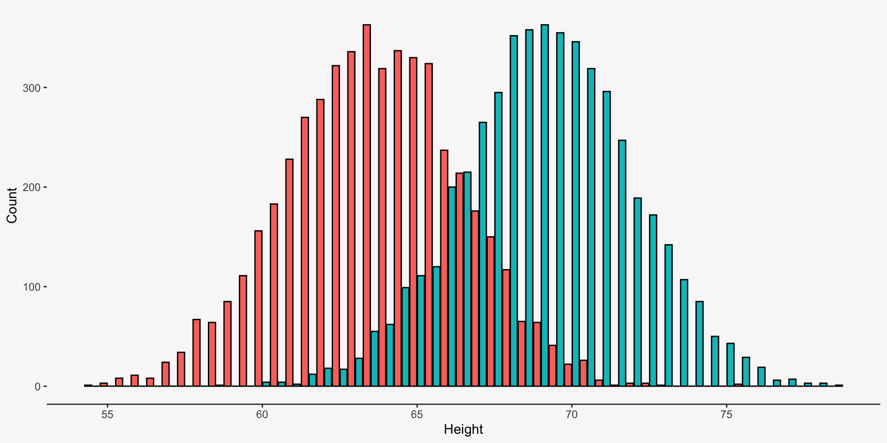
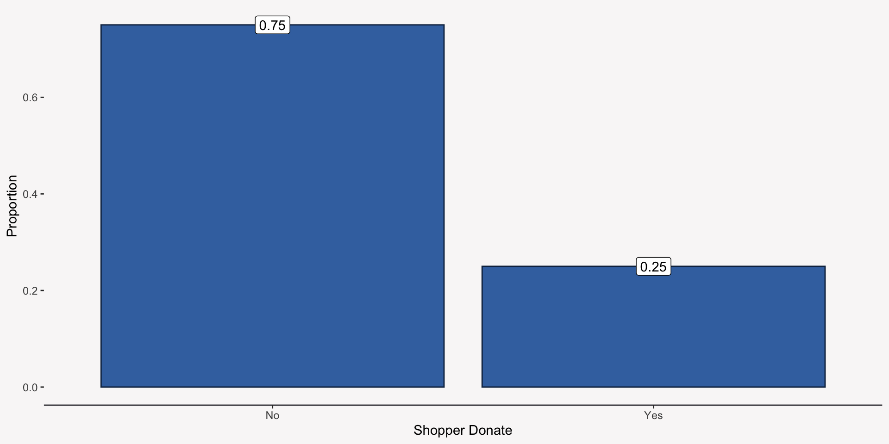
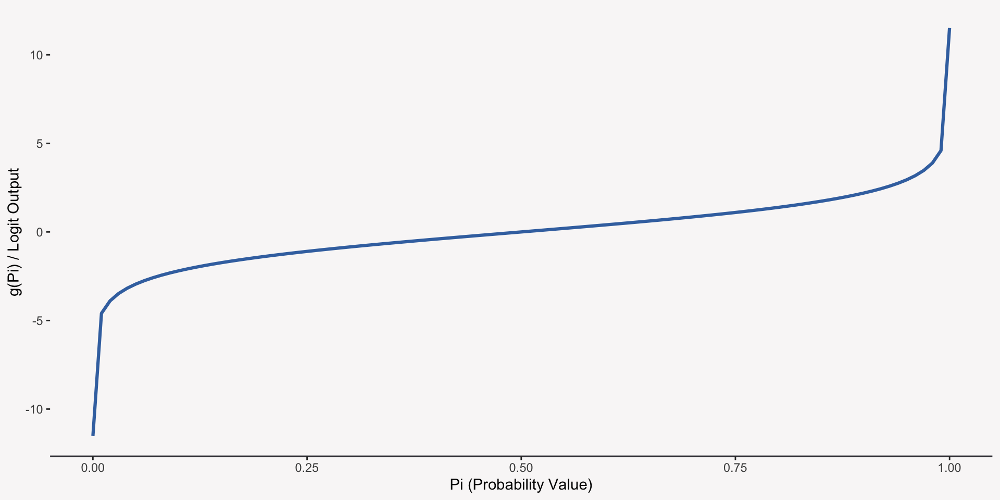
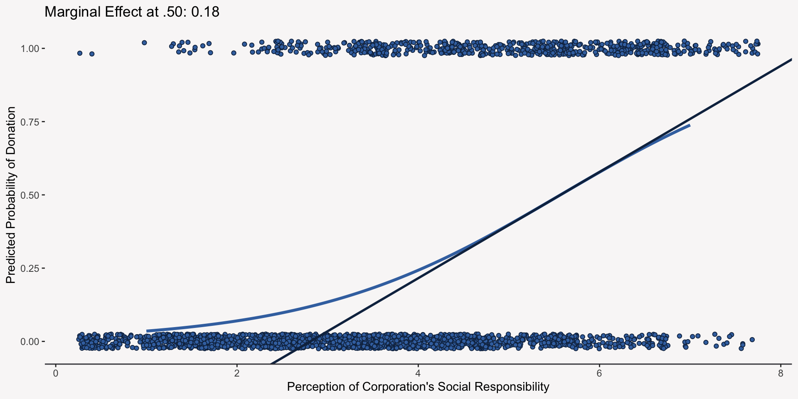
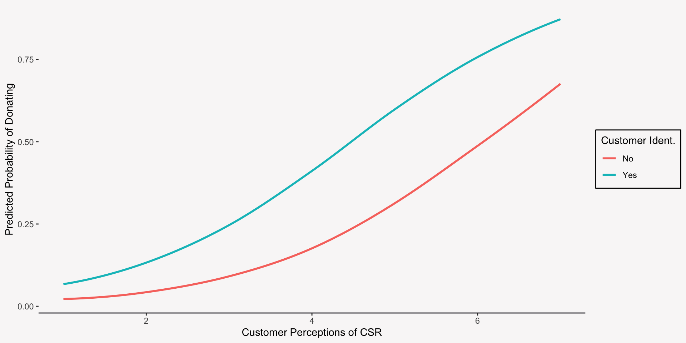

Today we will be learning about:
Generalized linear models (GLMs) are a family of statistical models that generalize the methods of linear regression to outcome variables that are neither continuous, nor normally distributed.
GLMs are built from three separate components:
When considered as a GLM, we can specify a simple linear regression model as:
We can write the linear regression model as a generalized linear model where the mean of the normal distribution is just set equal to the linear predictor, \(\beta_0 + \beta_1X_1\).
\[Y|X \sim N(\text{mn.} = \mu = g^{-1}(x), \space\text{s.d.} = \sigma)\]
\[Y|X \sim N(\text{mn.} =\beta_0 + \beta_1X_1, \space \text{s.d.} = \sigma)\]
Call:
lm(formula = ht ~ sex, data = data_ht)
Residuals:
Min 1Q Median 3Q Max
-11.1388 -1.8635 0.0065 1.8557 11.6430
Coefficients:
Estimate Std. Error t value Pr(>|t|)
(Intercept) 63.68069 0.04038 1576.85 <2e-16 ***
sexM 5.39268 0.05610 96.13 <2e-16 ***
---
Signif. codes: 0 '***' 0.001 '**' 0.01 '*' 0.05 '.' 0.1 ' ' 1
Residual standard error: 2.803 on 9998 degrees of freedom
Multiple R-squared: 0.4803, Adjusted R-squared: 0.4803
F-statistic: 9242 on 1 and 9998 DF, p-value: < 2.2e-16The probability model estimated by our regression is:
\[\text{US Ht.}|\text{Sex} \sim N(\text{mn.} =63.68 + 5.39 \times \text{Sex}, \space \text{s.d.} = 2.80)\]
\[\text{US Ht.}|\text{Sex = Male} \sim N(\text{mn.} =63.68 + 5.39, \space \text{s.d.} = 2.80)\]
\[\text{US Ht.}|\text{Sex =Female} \sim N(\text{mn.} =63.68, \space \text{s.d.} = 2.80)\]
Simulating the data according to our model:
The power of GLMs is that they open up a whole new world of probability distributions for us to specify when our outcome doesn’t follow a normal distribution like:
But how?
Our outcome is whether or not a shopper decided to donate to a non-profit the store at which they were shopping supported.
We can write our statistical model as:
\[\text{Donate} \sim Bern.(\text{mn.} = \pi, \space \text{s.d.} = \sqrt{\pi(1-\pi)})\]
We are interested in understanding if a shopper’s perceptions of the corporation’s corporate social responsibility is related to their decision to donate or not. How can we model this?
\[\text{Donate}|\text{CSR} \sim Bern.(\text{mn.} = g^{-1}(x), \space \text{s.d.} = \sqrt{\pi(1-\pi)})\]
How should a good link function for \(\pi\) behave? (Hint: the linear predictor can take on any negative or positive value.)
It turns out there is a link function that works very well: the logit or log-odds.
\[g(\pi) = \ln(\frac{\pi}{1-\pi})\]
Let’s see what value the Logit function outputs at different values of \(\pi\):
We could explore the relationship between Perceptions of CSR and donations by using a chi-squared test:
A better and more informative way to model the relationship between CSR and donations is by building and estimating a logistic regression equation:
\[\ln{\frac{\pi_{Don.}}{1-\pi_{Don.}}}=\beta_0 + \beta_1\text{CSR}\]
Note that the outcome we are modeling is now the log-odds (logit) of the probability of donating.
glmWe can use the function glm to estimate a logistic regression model in R. We need to tell glm:
donate ~ x_csrfamily = binomiallink = "logit".
Call:
glm(formula = donate ~ x_csr, family = binomial(link = "logit"),
data = data_donate)
Coefficients:
Estimate Std. Error z value Pr(>|z|)
(Intercept) -4.03572 0.16903 -23.88 <2e-16 ***
x_csr 0.72472 0.03652 19.85 <2e-16 ***
---
Signif. codes: 0 '***' 0.001 '**' 0.01 '*' 0.05 '.' 0.1 ' ' 1
(Dispersion parameter for binomial family taken to be 1)
Null deviance: 2837.7 on 2499 degrees of freedom
Residual deviance: 2315.0 on 2498 degrees of freedom
AIC: 2319
Number of Fisher Scoring iterations: 5Here is a checklist of things to focus on in the model summary:
Because of the nonlinearity of the link function, it is difficult to interpret the estimated parameters of a logistic regression model. There are two things we can know immediately though:
Thankfully, there are ways we can transform the slopes to make more sense of them!
Because thinking in logits is weird (and hard), let us transform the coefficients into something more interpretable: an odds ratio.
\[\beta_1=\log{\frac{\text{Odds}_{X + 1}}{\text{Odds}_{X}}}\]
\[\exp{(\beta_1)}=\frac{\text{Odds}_{X + 1}}{\text{Odds}_{X}}\]
A one unit increase in CSR results in a 2.06 (106 %) increase in the odds of donating to the corporation’s charity of choice.
| Coef. Name | Estimate | Exp. Estimate | SE | Z | p |
|---|---|---|---|---|---|
| (Intercept) | -4.04 | 0.02 | 0.17 | -23.88 | 0 |
| x_csr | 0.72 | 2.06 | 0.04 | 19.85 | 0 |
Odds ratios are also kind of hard to interpret, so I prefer to interpret the logistic regression slope as a change in the predicted probability of the outcome occurring (donating, in our example).
The probability curve is nonlinear, so the effect that our predictor variable (corporate social responsibility) has on our outcome (donating or predicted probability of donating) differs depending on what the predicted probability is:
So how do we provide a summary of these effects?
One way to solve the interpretability solution is to calculate the effect of the predictor at a specific value of the predicted probability:
Instead of calculating the marginal effect a single value of the predicted probability, it would be even better to calculate the average marginal effect and the maximum marginal effect:
| Avg. ME | Max ME |
|---|---|
| 0.11 | 0.18 |
Here is a summary of our different interpretations:
Now we would like to know if customers’ identification with the company (a categorical predictor—yes or no) is related to whether they donate to the company’s preferred charity.
Indicator coding takes a categorical variable with K categories (2 in our case) and transforms them into K - 1 indicator variables (0 or 1).
In our data, why do we only need one indicator variable and which category is the reference group?
# A tibble: 2,500 × 2
x_cust_id_indicator x_cust_id
<dbl> <chr>
1 0 No
2 0 No
3 1 Yes
4 1 Yes
5 1 Yes
6 1 Yes
7 1 Yes
8 0 No
9 1 Yes
10 0 No
# ℹ 2,490 more rowsEstimating a logistic regression model with a categorical predictor is no different than estimating one with a quantitative predictor and interpretation is a little easier.
Call:
glm(formula = donate ~ x_cust_id, family = binomial(link = "logit"),
data = data_donate)
Coefficients:
Estimate Std. Error z value Pr(>|z|)
(Intercept) -1.40110 0.05950 -23.55 <2e-16 ***
x_cust_idYes 0.98054 0.09671 10.14 <2e-16 ***
---
Signif. codes: 0 '***' 0.001 '**' 0.01 '*' 0.05 '.' 0.1 ' ' 1
(Dispersion parameter for binomial family taken to be 1)
Null deviance: 2837.7 on 2499 degrees of freedom
Residual deviance: 2736.4 on 2498 degrees of freedom
AIC: 2740.4
Number of Fisher Scoring iterations: 4When we exponentiate the slope for the categorical predictor, we can interpret it as an odds ratio where the numerator is the odds of an event for category K and the denominator is always the odds of an event for the reference category.
So, values greater than 1 indicate the odds of an event occurring for category K are greater than they are for the reference category.
x_cust_idYes
2.67 Similarly, we can also calculate the predicted probability of the event (donating) for each category:
# A tibble: 2 × 2
x_cust_id pred_prob
<chr> <dbl>
1 No 0.2
2 Yes 0.4For a two category categorical variable (like ours), the marginal effect is the difference in the two predicted probabilities. For more than two categories, it is the average difference across the K-1 comparisons.
# A tibble: 1 × 4
`dF/dx` `Std. Err.` z `P>|z|`
<dbl> <dbl> <dbl> <dbl>
1 0.199 0.021 9.68 0
2-sample test for equality of proportions with continuity correction
data: c(donate_yes, donate_no) out of c(total_yes, total_no)
X-squared = 105.51, df = 1, p-value < 2.2e-16
alternative hypothesis: two.sided
95 percent confidence interval:
0.1575121 0.2399721
sample estimates:
prop 1 prop 2
0.3963839 0.1976418 Simple logistic regression is great, but multiple logistic regression is better!
Like multiple linear regression, multiple logistic regression allows us to estimate the effect of one predictor variable while adjusting (controlling) for the effects of the other predictor variables in the model.
Why are ice cream sales related to shark attacks?
# A tibble: 2 × 2
sales avg_shark_att
<chr> <dbl>
1 Low Sales Rev. 20.9
2 High Sales Rev. 51.4# A tibble: 4 × 3
season sales avg_shark_att
<chr> <chr> <dbl>
1 Not Summer Low Sales Rev. 9.12
2 Not Summer High Sales Rev. 7.9
3 Summer High Sales Rev. 62.5
4 Summer Low Sales Rev. 63.6 Here is what adjusting looks like in a model:
| rowname | Estimate | Std. Error | t value | Pr(>|t|) |
|---|---|---|---|---|
| Int. | 51.35 | 3.28 | 15.66 | 0 |
| Low Sales | -30.46 | 4.59 | -6.64 | 0 |
| rowname | Estimate | Std. Error | t value | Pr(>|t|) |
|---|---|---|---|---|
| Int. | 7.93 | 1.17 | 6.79 | 0.00 |
| Low Sales | 1.19 | 1.18 | 1.00 | 0.32 |
| Summer | 54.55 | 1.18 | 46.07 | 0.00 |
We now want to know what the impact of both a customer’s perception of the corporation’s social responsibility efforts and their identification with that corporation have on their willingness to donate to the corporation’s preferred charity.
To answer these questions, we will need to use a multiple logistic regression model.
Estimating a multiple logistic regression is nearly identical to estimating the simple logistic regression equation:
We can interpret the estimates in a multiple logistic regression model just like we would the estimates in a simple logistic regression model with the added phrase of:
“while adjusting (or controlling) for the effects of the other predictor variables.”
The easiest way to interpret the effects is to plot the predicted probability curves. Below you will find two curves, one for the relationship between CSR and donation when a customer does not identify with the corporation and another curve for when the customer does identify.
We can also still use mfx::logitmfx() to calculate the average marginal effects for each predictor:
Call:
mfx::logitmfx(formula = mod_donate, data = data_donate, atmean = FALSE)
Marginal Effects:
dF/dx Std. Err. z P>|z|
x_csr 0.1076262 0.0078272 13.750 < 2.2e-16 ***
x_cust_idYes 0.1842693 0.0178109 10.346 < 2.2e-16 ***
---
Signif. codes: 0 '***' 0.001 '**' 0.01 '*' 0.05 '.' 0.1 ' ' 1
dF/dx is for discrete change for the following variables:
[1] "x_cust_idYes"For every unit increase in a customer’s perception of the corporation’s social responsibility, we expect the probability of donating to the corporation’s preferred charity to increase by 11 points, on average, while adjusting for the customer’s identification with the corporation.
We can make statistical inferences from the logistic regression model (and all GLMs) just like we did with the ordinary linear regression model:
We setup two hypotheses: Null & Alternative. The Null Hypothesis is a statement that our regression coefficient (slope) takes on a specific value, usually 0. Then we see how far away our actual estimate is from the null value. If it is far enough away, then we reject our null and claim that there is a statistically significant difference between our null value and estimate.
To build an approximate confidence interval around the logistic regression estimate, we can use the following formula:
Why do we exponentiate the confidence interval?
We are 95% confident that the true effect of CSR is between 1.98 and 2.3.
So, at its smallest, a unit increase in CSR will increase the odds of donating by 98% and at its largest, a unit increase in CSR will increase the odds of donating by 130%, while adjusting for customer’s identification with the corporation.